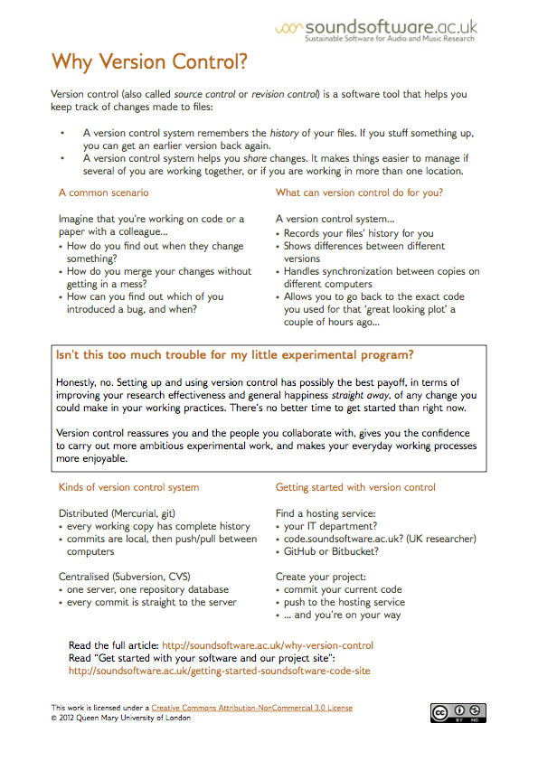

Welcome!
The SoundSoftware project, run from the Centre for Digital Music at Queen Mary, University of London, provides facilities, training, tools, and incentives to improve the publication and reuse of scientific software and data in the UK audio and music research community. The project was funded by the UK Engineering and Physical Sciences Research Council from April 2010 to the end of September 2014 and continues to be maintained at the Centre.
Our most active and widely-used service is the SoundSoftware code site, a hosting site for software projects in audio and music research. If you work in this field, take a look through the projects there; if you are carrying out academic research in this area, particularly in the UK, consider registering and using the site for your own software projects (read more about why).
This page provides access to the rest of our most popular resources, linked below, as well as an archive of events and posts spanning the course of the funded project, and links to videos and slides of talks, presentations, and tutorials.
Events
An annual series of one-day seminars on aspects of software and data in audio and music research.
With talk abstracts and video capture links.
| SoundSoftware 2014 | with Tillman Weyde, Bob L. Sturm, Guillaume Pellerin, Mark Plumbley, Wadud Miah, Nela Brown, Katerina Kosta, John ffitch, Oliver Bown, Toby Gifford, Di Mainstone, Alessia Milo, and Dimitrios Bountouridis |
| SoundSoftware 2013 | with Nick Barnes, Jamie Bullock, Becky Stewart, Mahendra Mahey, Bryan Pardo, Mathieu Barthet, Angus Hewlett, and Luís Figueira |
| SoundSoftware 2012 | with Cameron Neylon, Chris Cannam, Paul Walmsley, David Gavaghan, Roy Patterson, Thomas Walters, Bob L. Sturm, Steve Welburn, Jez Wells, David De Roure, Steve Crouch, and Mahendra Mahey |
Reproducible Research Prizes
IEEE International Workshop on Machine Learning for Signal Processing, 2014: Information — Winning entries
Audio Engineering Society 53rd Conference on Semantic Audio, 2014: Information — Winning entries
SoundSoftware.ac.uk Prizes for Reproducibility in Audio and Music Research, 2013: Information — Winning entries
Helpful Documents
Running a Reproducible Research Prize
Advice for any organisation interested in running a Reproducible Research Prize, either in association with a conference or independently. Based on lessons learned from our three rounds of Reproducible Research Prizes. [Download (pdf)]
Software Carpentry in a Research Group
Advice for research groups interested in providing Software Carpentry courses for researchers. We were instrumental in bringing Software Carpentry to the UK (in 2010) and have been involved in a number of Software Carpentry workshops since then. [Download (pdf)]
Printable Single-Page Handouts
See the accompanying links for longer online articles on these topics.
Getting Started with code.soundsoftware.ac.ukHandout on how to get started with the code.soundsoftware facility—a software project hosting site for use by UK audio and music researchers. Find the site here. |
Publishing your research codeThis handout focuses on the importance of publishing research code in the audio and music research areas, with some advice to help researchers actually get around to doing it. |
Publishing your research dataSimilarly to research code, research data publication allows your data to be reused by other researchers e.g. to validate your research or to carry out follow-on research. To that end, a suitable data publication host will allow your data to be discovered and will be publicly accessible. This handout focuses on some of the most common questions related to this issue. |
Version Control
 |
Introduction to Open Source Software LicensesPlease read this handout if you plan to start writing or are about to publish your research code. If you don't use any licence on your code, other people can't legally make use of your code, so you need to use a licence to let them know what they can do with it. If you wish to learn more about licenses, please take a look at this handout. |
Unit Testing: Why Bother?This handout focuses on unit testing: the practice of testing the components of a program automatically, using a test program to provide inputs to each component and check the outputs. |
Unit Testing: An Audio Research ExampleThis handout has an example of unit testing applied to an audio-to-note method for solo vocal music recordings. Please find the accompanying code here. |
Software Tools
code.soundsoftware.ac.uk is a code-repository and project management site for software development carried out in the UK academic audio and music research field. It is intended to provide a useful facility for researchers who are making software in the course of their work, and for anyone who wishes to make use of such software in the future. We provide project management and hosting for source code, either published or private.
EasyMercurial is a simple user interface for the Mercurial distributed version control system. It's free, open source, and cross-platform.
You can find pre-compiled versions by following this link. The source code repository can be found here.
Other Software Projects
Some other work we have contributed to or provided consultation on:
Auditory Models — Implementations of Auditory Image Model and related work.
C++ Constant-Q — Library implementing the Constant-Q transform of a time-domain signal.
HSM — Library for Harmonic Sinusoidal Modelling.
Human Echolocation — Web application proof-of-concept for human echolocation evaluation.
IMAF encoder and visualisation — for the MPEG-A Interactive Music Application Format standard.
Loudness Plugin — Vamp plugin implementation of loudness (perceptual) features.
Segmentino — Music structural segmentation implementation.
SMALLbox — Sparse Representation and Dictionary Learning evaluation toolbox.
Sonic Visualiser — Audio and music visualisation and analysis application.
SWORD uploader — Bulk uploader using the SWORDv2 protocol for data archiving.
Tempogram Plugin — Vamp plugin implementation of tempogram and cyclic tempogram audio features.
Tony — Software program for high quality scientific pitch and note annotation.
Vamp — Plugin SDK, testing, evaluation, and plugin and host maintenance.
The SoundSoftware project also maintains documentation and other work related to the project itself on the SoundSoftware code site: SoundSoftware Project.